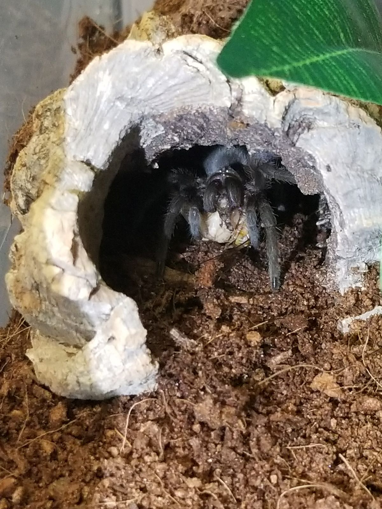
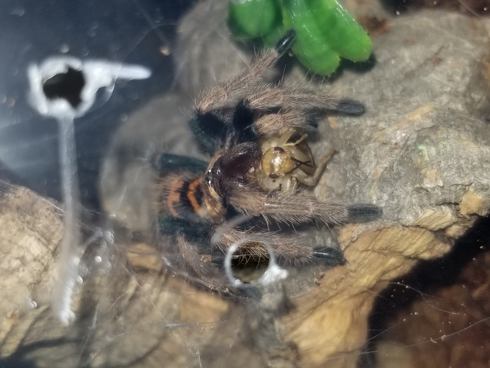
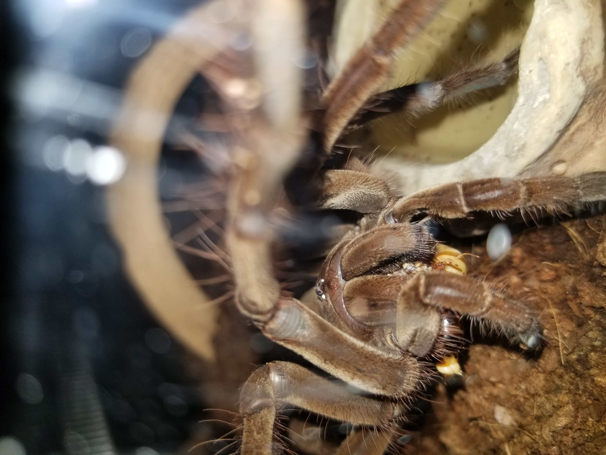
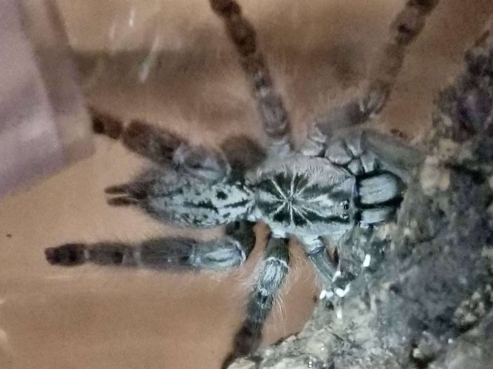

Hello World!
and welcome to my Collection of Theraphosidae.





My collection includes terrestrial, arboreal, and fossorial T(arantula)s.
- Terrestrial T's are also called opportunistic burrowers. They live on the ground and will gladly take ownership of a prebuilt burrow.
- Arboreals, as the name suggests, live in trees.
- Fossorial T's live in intricate tunnel systems deep underground. These obligate burrowers will happily create their own burrow from scratch.
My collection includes both Old and New World tarantulas.
- New World T's live on the American continent. They are generally more docile than their Old World counterparts. Their venom is often less strong, but they make up for it with so-called urticating bristles (tiny hairs that will cause extremely itchy rashes on skin, much like fiberglass).
- Old World T's live on the eastern continents. Their venom is very potent, and the speed of these T's is often faster than the human eye can register. Their natures are generally much more defensive, and they will not hesitate to bite, as they lack urticating bristles.
Here's a table summary of my collection, because why not:
| # | Name | Genus | Species | Class | Gender | Type |
|---|---|---|---|---|---|---|
| 1 | Kass | Brachypelma | albiceps | Terrestrial | Unknown | New World |
| 2 | Majora | Brachypelma | albopilosum | Terrestrial | Unknown | New World |
| 3 | Kotake | Caribena | versicolor | Arboreal | Unknown | New World |
| 4 | Koume | Caribena | versicolor | Arboreal | Unknown | New World |
| 5 | Sterling | Ceratogyrus | marshalli | Fossorial | Unknown | Old World |
| 6 | Gohma | Chromatopelma | cyaneopubescens | (Semi-)Arboreal | Unknown | New World |
| 7 | Biggie Smalls | Cyriocosmus | elegans | Terrestrial | Unknown | New World |
| 8 | Mipha | Euathlus | sp. Red | Terrestrial | Female | New World |
| 9 | Ruto | Euathlus | sp. Red | Terrestrial | Female | New World |
| 10 | Pennywise | Grammostola | pulchra | Terrestrial | Male | New World |
| 11 | Malory | Heteroscodra | maculata | Arboreal | Female | Old World |
| 12 | Purrah | Kochiana | brunnipes | Fossorial | Unknown | New World |
| 13 | Paya | Kochiana | brunnipes | Fossorial | Unknown | New World |
| 14 | Revali | Monocentropus | balfouri | Terrestrial | Unknown | Old World |
| 15 | Dinraal | Nhandu | chromatus | Terrestrial | Unknown | New World |
| 16 | Tetra | Nhandu | tripepii | Terrestrial | Unknown | New World |
| 17 | Midna | Poecilotheria | regalis | Arboreal | Suspect Female | Old World |
| 18 | Pam | Psalmopoeus | pulcher | Arboreal | Unknown | New World |
| 19 | Barry | Pterinochilus | murinus | Fossorial | Unknown | Old World |
| 20 | Charlotte | Theraposa | stirmi | Terrestrial | Unknown | New World |
Note:
The images shown on the sub pages are from Taratula Canada.
Their use is allowed as long as the images are included as a link. (Source)
The images on the homepage here are a sample of my own horde.
I used Tarantula Canada's images on the sub pages to show the adult version of each of my Tatantulas.
Many of my collection are less than a half inch large, and taking good images, even with a proper lens, is a considerable challenge.